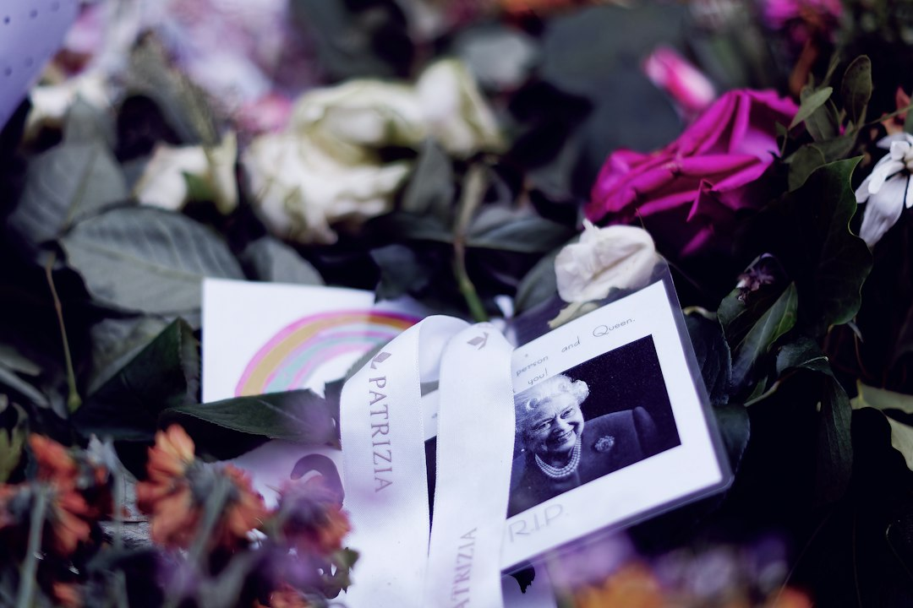

Come Ridurre Sprechi e Costi con Eternia: La Rivoluzione Digitale per Onoranze Funebri e Servizi Memoriali Pet

Riduzione drastica degli sprechi e ottimizzazione dei costi nella gestione funebre e memoriale con Eternia
- La gestione tradizionale di ricordini e necrologi genera notevoli sprechi di tempo e costi elevati.
- I problemi operativi causano inefficienze e rischi di dispersione di ricordi importanti per i clienti.
- Eternia offre un portale memoriale digitale integrato con AI che semplifica e innova l’intera filiera, riducendo costi e migliorando l’esperienza.
Analisi approfondita della notizia e delle implicazioni operative
Il settore delle Onoranze Funebri, delle Case Funerarie e dei Servizi Memoriali Pet è oggi chiamato a far fronte a una sfida crescente legata alla gestione dei ricordini e dei necrologi tradizionali, basati esclusivamente su supporti cartacei. Questi metodi non solo sono costosi ma anche inefficaci dal punto di vista operativo, in quanto comportano una perdita progressiva di tempo e l’aumento del rischio che ricordi fondamentali si disperdano o vadano persi irreparabilmente. La necessità di innovare con soluzioni digitali rappresenta dunque una priorità imprescindibile.
In un mercato in cui la sensibilità e il rispetto per il delicato momento del commiato devono essere accompagnati da efficienza e ottimizzazione, l’adozione di strumenti tecnologici avanzati può fare la differenza. L’attenzione si concentra su soluzioni capaci di integrare semplicità d’uso, elevata personalizzazione, e affidabilità 24/7, minimizzando il lavoro manuale e migliorando la qualità del servizio offerto alle famiglie.
Le conseguenze e i costi di non agire
Restare ancorati a processi tradizionali porta conseguenze operative e finanziarie pesanti. I ricordini cartacei, spesso distribuiti a mano durante le cerimonie, rischiano di perdersi o di essere danneggiati, vanificando così l’intento commemorativo. Inoltre, la stampa e la diffusione dei necrologi cartacei risultano onerose e limitate in termini di copertura e tempistiche. Questi limiti deteriorano la capacità di fornire un’esperienza di condolenza solenne e di raccogliere in modo organico e interattivo i messaggi di affetto e commemorazione.
I mancati digital engagement e l’assenza di una soluzione integrata costringono i titolari delle agenzie a dover impiegare risorse umane e finanziarie significative per gestire manualmente tutte queste attività, che spesso risultano poco produttive. Nei casi peggiori, si osserva una perdita di clienti e reputazione, poiché le famiglie cercano realtà che garantiscano più efficienza, innovazione e rispetto per il ricordo dei propri cari.
Come Eternia risolve il problema
Eternia, la piattaforma SaaS di RM Studio, nasce per rispondere in modo completo e intelligente a queste criticità. Attraverso portali memoriali digitali d’autore, personalizzati e brandizzati in modalità white-label, Eternia consente di passare da una gestione tradizionale e frammentata a un’esperienza integrata e moderna.
Le funzionalità chiave includono:
- QR Code per urne e ricordini: ogni cerimonia dispone di QR Code univoci che consentono ai visitatori di accedere immediatamente al portale memoriale digitale, trasformando ogni ricordo in digitale e sempre reperibile.
- Mappa GPS integrata: aiuta a localizzare facilmente la sede della cerimonia o il punto dove è collocata l’urna, facilitando la partecipazione e il rispetto del momento commemorativo.
- Libro dei Ricordi interattivo: un luogo digitale dove amici e familiari possono lasciare messaggi, foto e condoglianze, preservando per sempre la memoria in modo solenne e rispettoso.
- Necrologi generati con AI in 1-click: la tecnologia AI permette di creare necrologi esteticamente curati e personalizzati in pochi secondi, eliminando i tempi morti della progettazione manuale.
- Reperibilità vocale AI 24/7: un assistente virtuale intelligente sempre attivo per rispondere alle richieste di informazioni relative alla cerimonia, liberando il personale da compiti ripetitivi e migliorando il servizio ai clienti.
Questa suite di strumenti permette a titolari di Onoranze Funebri, Case Funerarie e servizi Memoriali Pet di ridurre drasticamente i costi di stampa, la dispersione di ricordi, e il lavoro manuale, con al contempo un miglioramento sostanziale dell’immagine e della qualità del servizio offerto.
| Gestione Tradizionale | Con Eternia |
|---|---|
| Ricordini cartacei facilmente persi o danneggiati | Ricordini digitali con QR Code sempre accessibili |
| Necrologi cartacei costosi e con distribuzione limitata | Necrologi AI creati in 1 click, personalizzati e condivisibili |
| Difficoltà a raccogliere condoglianze in modo organizzato e dignitoso | Libro dei Ricordi digitale e interattivo accessibile online |
| Grande spreco di tempo nella gestione manuale delle pratiche | Automazione e assistenza vocale AI 24/7 per il supporto clienti |
| Costi elevati per stampa e distribuzione materiali | Riduzione drastica dei costi grazie al digitale e soluzioni white-label |
💡 Ti è stato utile questo approfondimento?
Condividilo con un collega o un amico del settore Titolari di Onoranze Funebri, Case Funerarie e Servizi Memoriali Pet a cui potrebbe interessare!
FAQ - Domande Frequenti per i professionisti delle Onoranze Funebri
1. Come posso integrare Eternia nel mio flusso operativo esistente?
Il sistema è progettato per essere immediatamente integrabile con i processi correnti, offrendo un’interfaccia intuitiva e formazione dedicata che permette una transizione senza interruzioni.
2. Quanto tempo si risparmia mediamente utilizzando Eternia?
Le funzioni AI e la digitalizzazione delle pratiche consentono di ridurre fino al 70% il tempo dedicato alle attività amministrative e alla gestione delle cerimonie rispetto ai sistemi tradizionali.
3. Eternia garantisce la sicurezza e la privacy dei dati sensibili?
Assolutamente sì. La piattaforma utilizza protocolli avanzati di crittografia e conformità GDPR, assicurando la massima protezione delle informazioni personali e delle testimonianze.
Inizia Subito
Agency Hub B2B a €690 per 10 Cerimonie White-Label personalizzate col brand dell'agenzia.
Fonti Ufficiali e Risorse Esterne
Scopri l'Intelligenza Artificiale per la tua attività
Ottimizza i processi e aumenta le vendite con le soluzioni B2B di RM Studio.
Scopri Eternia